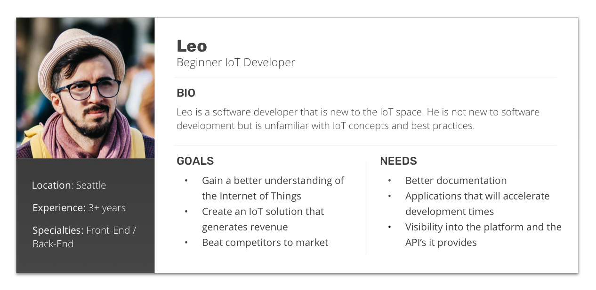
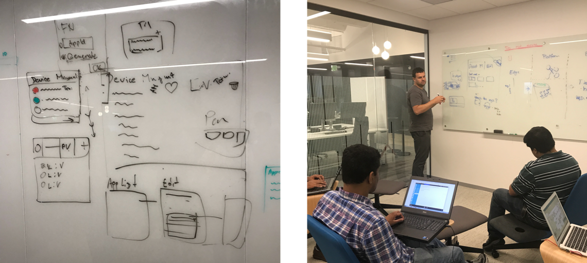
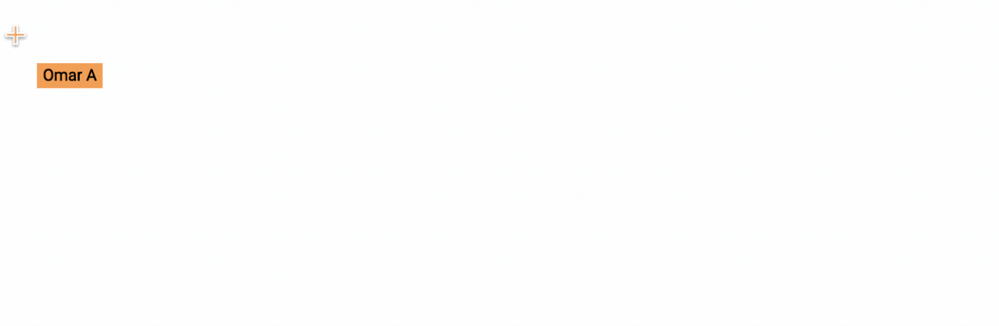
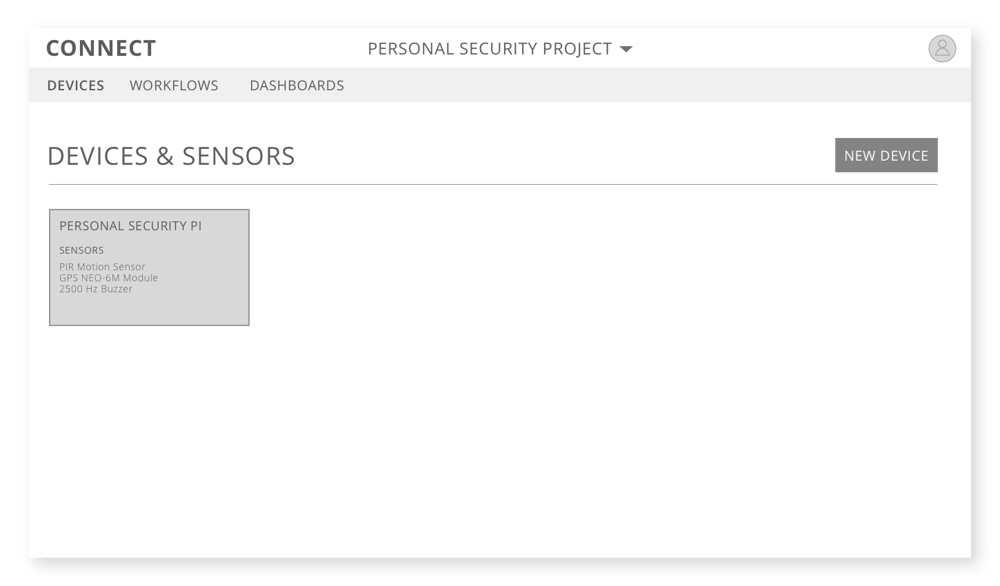
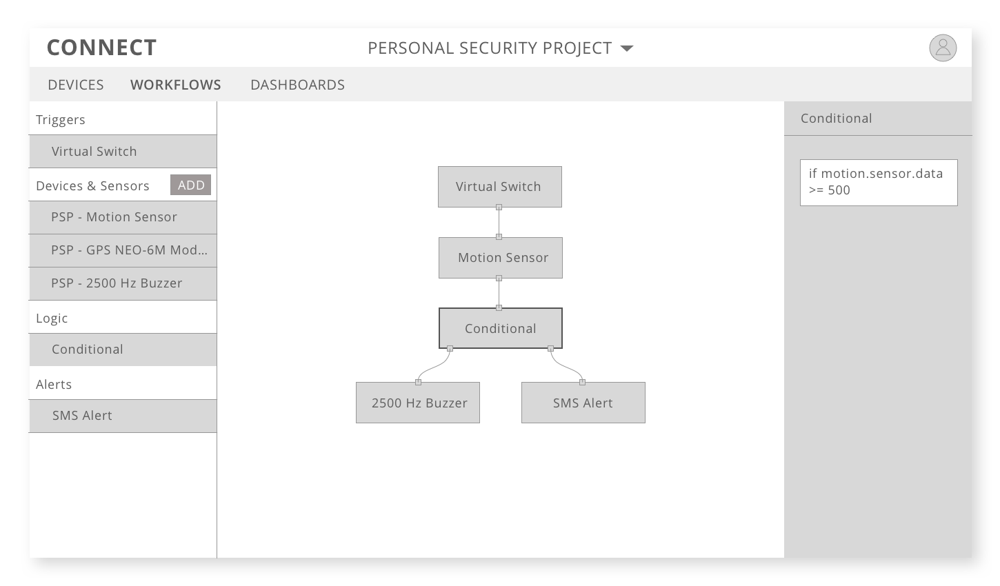
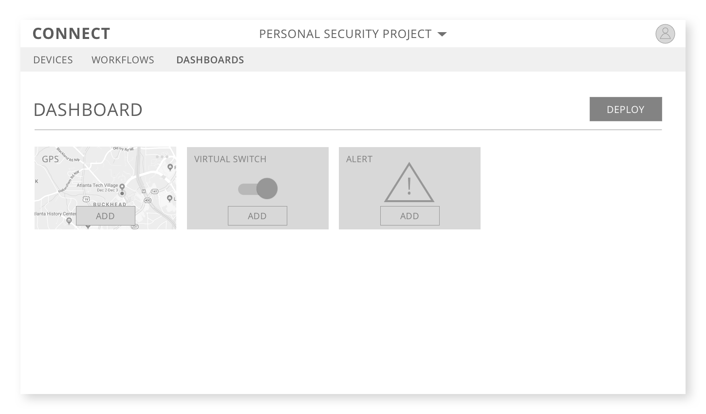
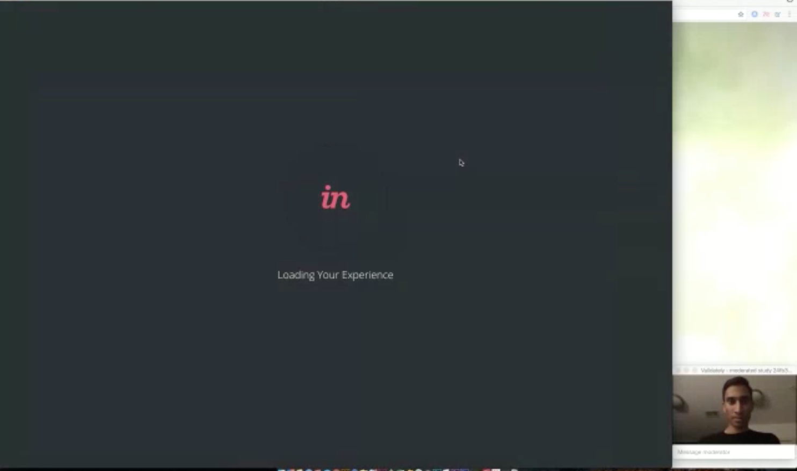

Earlier this year, I attended a Design Sprint Workshop hosted by Adam Perlis's Academy and Invision’s DesignBetter.Co. A design sprint is a five-phase framework that helps answer critical business questions through rapid prototyping and user testing. Sprints let your team reach clearly defined goals and deliverables and gain key learnings, quickly. I wanted to use these techniques and strategies to quickly release a prototype to executive stakeholders.
Creating a large Internet of Things platform is a great feat, especially when it is created inside an 112 year old manufacturing company. But what happens when you want to go to market with customers that are new to IoT and the industrial space?
Industrial Internet of Things (IIoT) platforms bring together large networks of devices to collect, exchange, and analyze big data. These platforms need to be reliable, scalable, and secure. Unfortunately, this does not translate well to being user friendly.
This was the challenge we wanted to approach in our Design Sprint. Executives figured that if anyone could use our platform, it would spark new innovations and solutions inside and outside the company. We wanted to come up with a product that would allow beginner IoT developers to get familiar with the platform and create solutions that were not necessarily Industrial in nature.
DAY 1
WHAT'S ON YOUR RADAR?
To kick off the sprint, we gathered everyone’s knowledge on the new persona we were targeting. We discussed pain points, needs, and goals that we could address to help them use the platform.

HOW MIGHT WE?
After identifying key problems we started to frame questions using the “How Might We” framework. The team began writing these open ended questions on sticky notes and hanging them on the wall. A lot of us were eager to jump to solutions but I think this technique gave us some time to take a step back and define the unknowns.
The next step was to affinitize the “How Might We’s” into overarching themes. This is always good practice so everyone gets a chance to scan through all the content. Also it let us prioritize the most important questions that needed answers.
SKETCHES
After lunch, we started to look at back at all the key themes we identified. Naturally, people started gravitating towards sections that they thought were the most important.
After a couple of cups of coffee, the team started sketching, bouncing ideas off each other, and entering their "flow" state. By the end of the exercise, the room was filled with ideas, user flows, UI components, and designs.

DAY 2
WHAT WILL WE BUILD?
After spending some time away from the madness, we returned to our ideas and sketches to make a decision on a path forward. There were a lot of great ideas but we had to focus on things we could prototype by the end of the day.
We ended up with a product concept that would allow beginner developers to connect and command their devices to create easy IoT solutions. A great example project the team came up with was a personal security device that would let users track a Raspberry Pi. It used a lot of the core components of the platform, was easy to for developers to relate to, and could start to turn their brain about bigger security solutions.
These were the three pillars that would make the magic happen:
Device Manager - allows the user to create and connect devices to the platform and add device sensors.
Workflow Designer - allows the user to create logic between the device and the platform with a drag and drop interface.
Dashboard - allows the user to add widgets that display data from their workflows and can be published to the web for sharing.
DESIGN COLLAB
Now it was time to roll up our sleeves. I worked with another UX designer using Figma so we could quickly mock up ideas right in front of our stakeholders.

We started designing at a very low fidelity, allowing our stakeholder group to twist and turn the designs as they pleased. Then we ran away for a couple of hours to clean up the wireframes so they would be ready for testing.
Although the scope of our designs for the sprint were for a single project with limited devices, we wanted to leave a lot of room to scale. With these designs, you could eventually have many devices, workflows, or widgets without it getting too crowded.



DAY 3
IT'S TIME TO TEST!
We hacked together a prototype in around 5 hours on Tuesday and I have to admit it wasn’t my best work. The point of the sprint is to not worry about perfection and instead try to create a facade of a working app which is what we did.
WHERE MY USERS AT?!
Earlier in the week, we gathered a global pool of 6 candidates that were senior developers but new to the IoT space. The tests were conducted using Validately, a user research tool, which allowed us to record and have multiple stakeholders dial-in.

After conducting the user tests, it was clear that our scrappy prototype had a lot of hiccups. One big pain point for our users was the lack of on boarding or tool tips provided. They wanted to guidance around the application for the first time. They also wanted more information on what is happening behind the scenes in the platform.
After this long retrospective, our sprint finally came to an end!
IT'S A WRAP
LESSONS LEARNED
LISTEN TO ENGINEERING
From a design sprint perspective, the activity was invaluable for fostering creativity. From an engineering perspective, I wish we would have paid more attention to the technical limitations of the platform.
During the sprint, we often ignored or parked comments by engineering on complexity. This was a design sprint so we wanted to create something really cool for executive stakeholders. What we found out later was how difficult some of these ideas would be to execute.
FINAL OUTCOME
PRESENTATION AND PRODUCTION
We polished the visuals and packaged our story for our presentation to executives. They loved the idea and wanted us to go for it. They even mentioned expanding the idea to include artificial intelligence and advanced analytics.
The core capabilities of the idea are in production and receiving great feedback. As far as the advanced features, we are still in negotiation with engineering on how we can provide value without too much rework on the platform side.